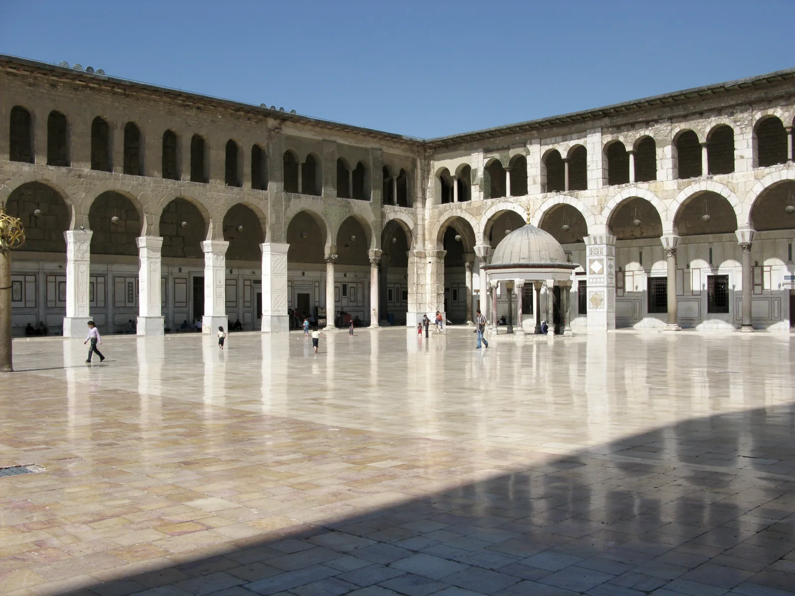

تراث وعمارة
من الفناء إلى المدينة
العمارة السورية
أفنية وأقواس وحجر متنوع، تروي كيف تتجاور الخصوصية والحياة المشتركة.
الفناء الداخلي عنصر معروف في البيوت التقليدية بدمشق. وفي بصرى يعطي البازلت العمارة طابعاً مختلفاً. تساعد مقارنة المواد والأفنية والأزقة على قراءة التنوع العمراني، دون افتراض أن كل بيت سوري له الشكل نفسه.
تفاصيل تستحق الانتباه
- الأفنية الداخلية
- الأقواس
- تنوع الحجر
للقراءة والتوثيق
الصور توثّق وقت التقاطها؛ لا تصف الحالة الحالية أو إمكانية الوصول.